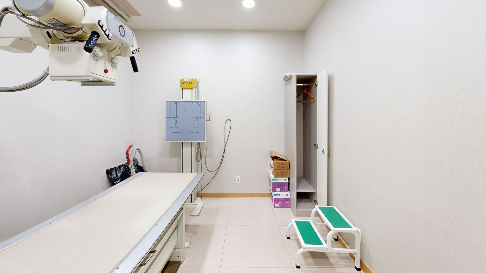
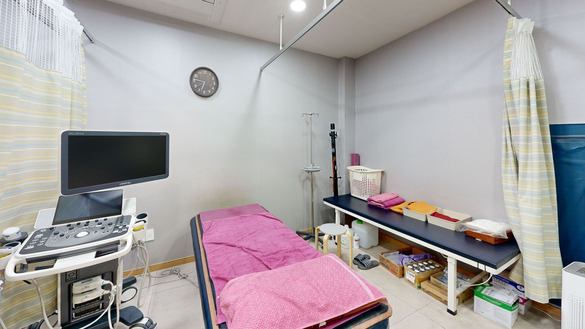
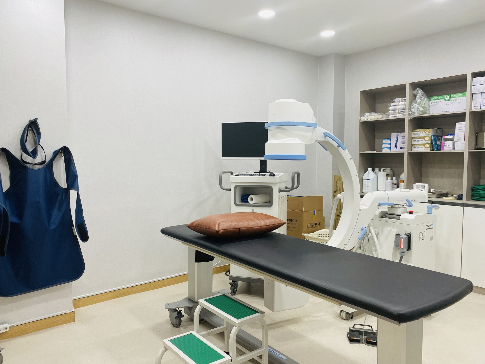

Equipment
검사 장비
- X-ray
- 뼈와 관절 상태를 확인합니다.
- 초음파
- 근육과 힘줄을 봅니다.
- C-arm
- 영상으로 위치를 보며 시술합니다. 경추·흉추, 요추·천추 중재 수료.

Treatment
부위별 진료
- 01
목
목 통증과 일자목, 거북목을 진료합니다.
뼈는 X-ray, 근육과 힘줄은 초음파로 확인합니다. 경추 시술이 필요하면 C-arm으로 위치를 보며 진행합니다.
시술 후 일시적으로 불편감이 있을 수 있습니다.
- 02
허리
허리 통증과 다리로 퍼지는 저림을 진료합니다.
X-ray와 초음파로 먼저 확인하고, 필요하면 C-arm으로 요추·천추 시술을 합니다.
도수치료가 맞는 경우 물리·도수치료실에서 함께 치료합니다.
- 03
어깨
팔을 올리거나 돌릴 때 아픈 어깨, 굽은 어깨를 진료합니다.
근육과 힘줄은 초음파, 뼈와 관절은 X-ray로 확인합니다.
- 04
무릎
걸을 때나 계단을 오를 때 아픈 무릎을 진료합니다.
X-ray와 초음파로 관절을 확인하고, 다리 정렬이나 골반·평발이 함께 있으면 체형 진료를 같이 합니다.
체중이 고민이라면 비만클리닉 진료도 함께 받을 수 있습니다.
IV Therapy
영양 수액
- 목 · 경추
- 허리
- 어깨 · 오십견 · 회전근개
- 무릎
- 만성통증
- 경추성 두통
- 손발저림
- 만성피로
- 감기몸살
- 장염 · 설사
- 간
- 갱년기
- 대상포진
- 피부
- 두통 · 어지럼 · 이명
Clinic
1층 치료 공간


- 수련
- 인하대병원 마취통증의학과 전공의 과정 수료
- 병원
- 제주 중앙병원, 김포 우리병원 마취통증의학과 과장
- 교육
- 경희대 · 인하대 외래교수 역임
- 수료
- C-arm 경추·흉추, 요추·천추 중재